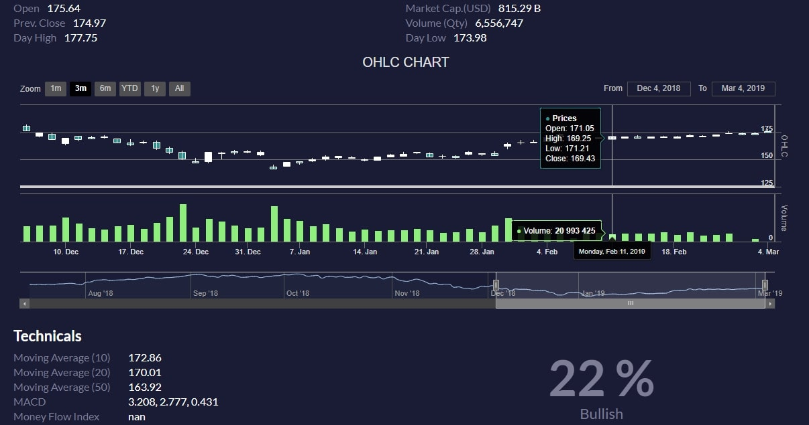

About
Practicing Gradient boost over myself. Waiting to achieve the state of the art @Epoch 5!
Hi! I'm Vivek and I'm currently pursuing Masters in Computer Science at University of North Carolina, Charlotte. Having experience in analytics field, I’ve always sought out opportunities and challenges that are meaningful to me. I've never stopped engaging my passion to help others and solve problems.
Working with the data, I enjoy using my obsessive attention to detail, my unequivocal love for curiously exploring data and finding insights, and my mission-driven work ethic to crack scientific answers to common real-world problems. That's why I’m excited to make a big impact at a high growth company.
Experience
Graduate Teaching Assistant - Data Mining
- Assisted professor by preparing the course content, academic grading and conducting classes whenever necessary
- Developed an interactive tool to assist analysis of emotional trends during crisis events
- Performed topic modelling, emotion analysis to assess message level contagion in social media
- Implemented RNN-LSTM model to detect Spam Bots in Twitter posts with 97% accracy
- Tools and Technologies: Python, Plot.ly, Deep Learning, Keras, NLTK, spaCy, Natural Language Processing
Jan 2018 - Present | Charlotte, NC
Distributed Developer Intern
- Involved in model ETL orchestration which controls job executions chained by CloudWatch using AWS Step function and AWS Lambda to automate conditional workflow in company's reimbursement module
- Worked on migrating API services to Asynchronous API calls using Reactive and Vert.X frameworks leveraging broker server RabbitMQ
- Daily collaboration with development and release team to develop process that increase deployment efficiency, reduce defects and exceed code quality expectations
- Tools and Technologies: Java, AWS Cloud Services, Docker, Reactive Frameworl, Vert.X, MySQL
May 2018 - Aug 2018 | Cedar Rapids, IA
Jr. Data Analyst
- Expertly consulted and solved complex learning solution including: identifying client training needs, successfully used performance consulting to analyze data and identify root cause to determine appropriate learning solution
- Troubleshooting application server for business function processing issues
- Maintained database instances and executed SQL queries for data validation
- Designed and implemented stored procedure views and other application database code objects
- Used advanced Excel functions to create pivot tables. Generated adhoc reports using Oracle and Learning Management System(SABA)
- Tools and Technologies: SQL, Java, Learning Management System, MS Office, Tableau, SQL Server Reporting Services(SSRS)
June 2016 - May 2017 | Laurel, MD
Data Analyst Intern
- Built complex SQL queries, generated reports from different sources for various business needs
- Developed framework, metrics and reporting to ensure progress can be measured, evaluated, and continually improved
- Supported the development of performance dashboards on Tableau that encompass key metrics to be reviewed with senior leadership
- Tools and Technologies: SQL, Java, MS Office, Tableau
Dec 2015 - May 2016 | Ahmedabad, India
Projects

Market signal predictions from sentiments and technical indicators